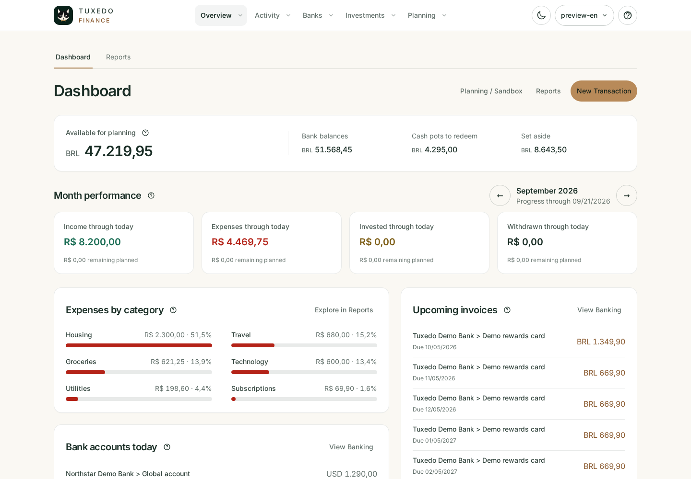
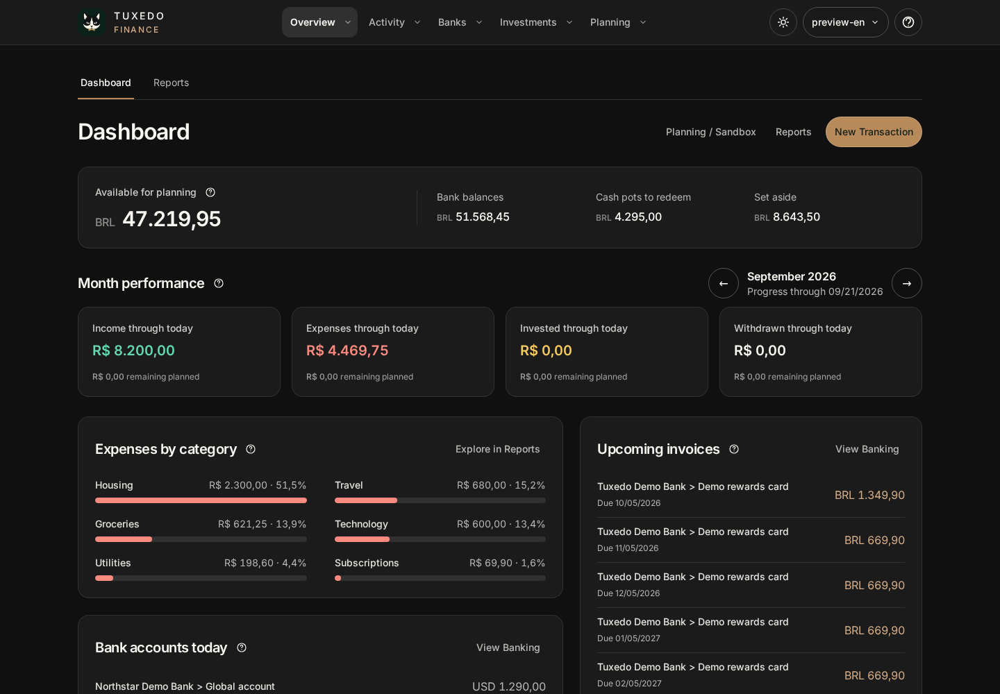
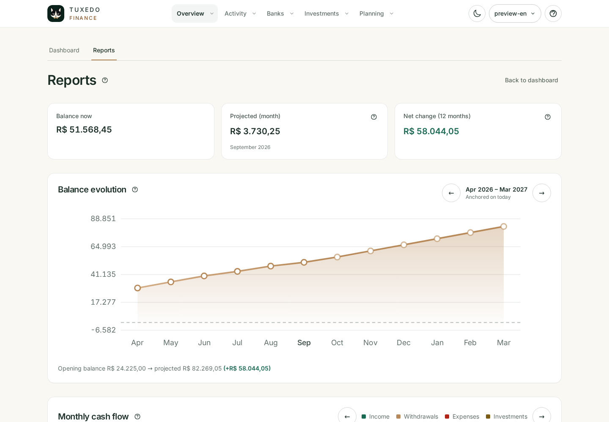
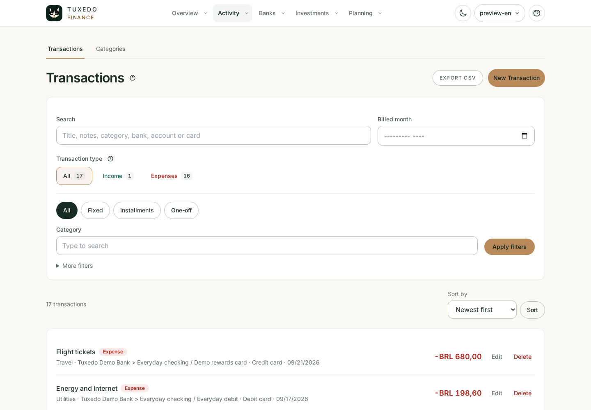
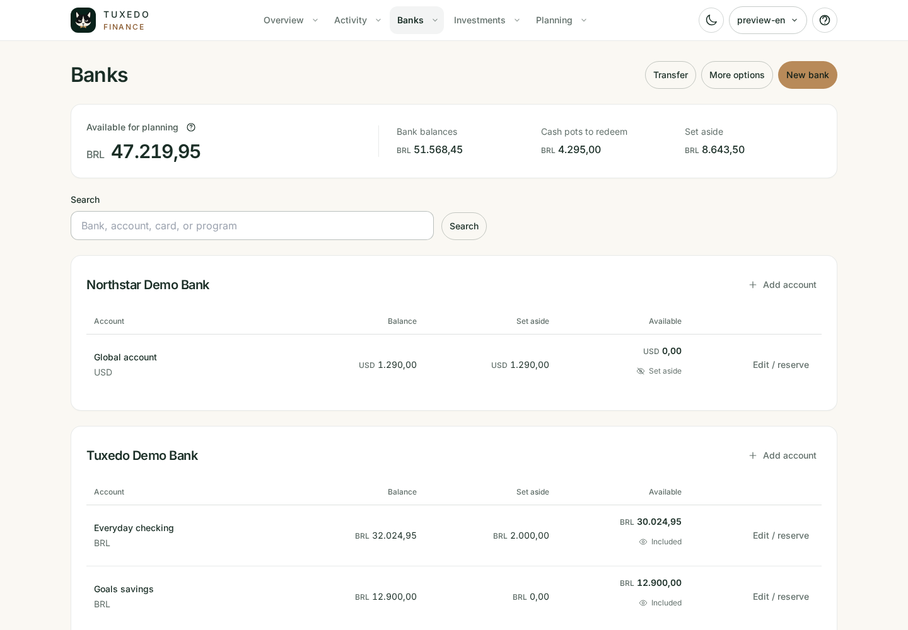
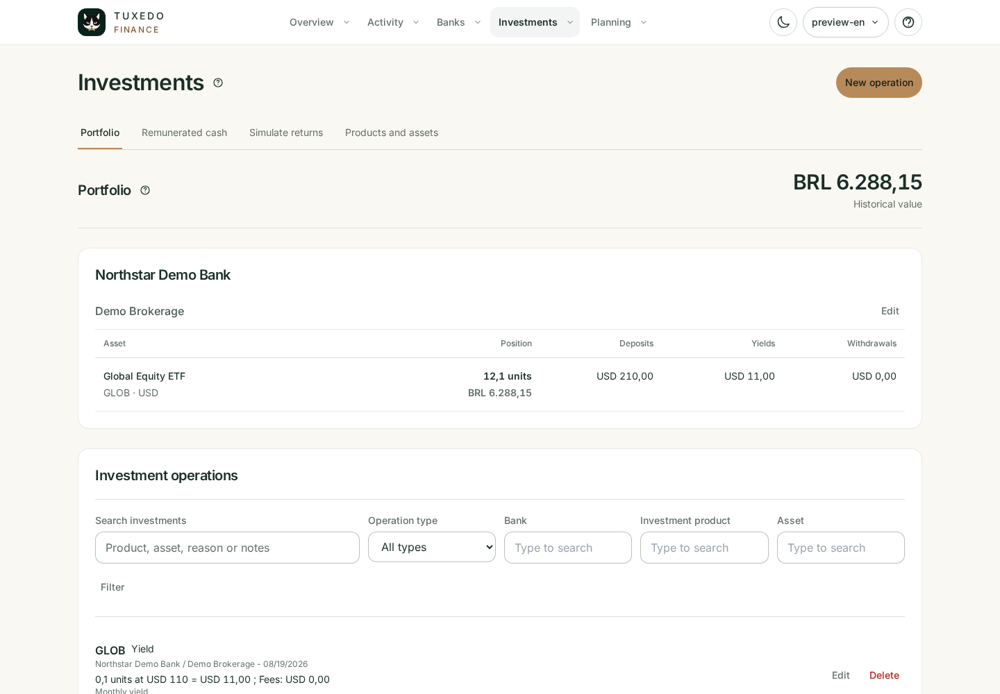
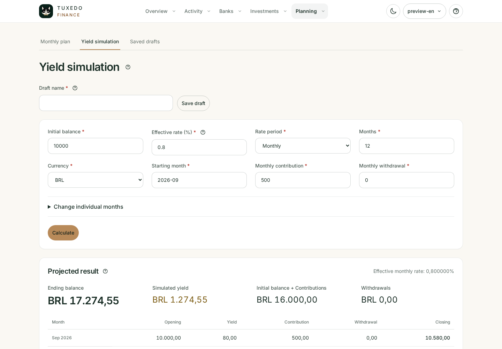

Interface preview
Meet your finances beyond the spreadsheet.
Explore the real Tuxedo Finance interface before installing it. This guided tour covers cash flow, reports, daily transactions, banking, investments and planning.
Monthly activity and current accounts.
The selected month separates recorded activity from what is planned, keeping income, expenses, investment deposits and withdrawals distinct. Current account balances and upcoming invoices remain independent of the selected month.
{kind=link}

{kind=link}

Patterns that stay connected to the numbers.
Server-rendered charts compare balance evolution, cash flow, payment instruments, categories, installments and recurring expenses without hiding the underlying values.

Every event, classified and searchable.
Income and expenses retain their category, payment instrument, recurrence, installment plan, transaction date and billed month.

Accounts, cards and currencies in context.
See what is available for the month across accounts and remunerated cash. Reserve part of an account or exclude its positive balance from planning while keeping its actual balance visible.

Investments and monthly cash have different roles.
Keep portfolio positions separate from remunerated cash set aside to pay the month. Deposits, withdrawals and actual yields retain their history, quantities, fees and cash accounts.

Try a scenario before making it real.
Estimate a monthly budget from future installments and recurring expenses, or simulate balance growth with contributions, withdrawals and an effective rate. Save named drafts explicitly, reopen and compare them without changing financial records.
